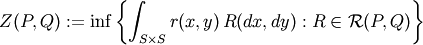
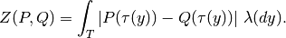
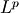
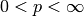
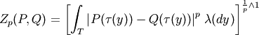

kr calculates the Kantorovich-Rubinstein distance and corresponding p-values.
usage: kr [options] placefiles
| --pp | Use posterior probability for the weight. |
| --unweighted | Treat every placement as a point mass concentrated on the highest-weight placement. |
| --transform | A transform to apply to the read multiplicities before calculating. Options are ‘log’ and ‘unit’. Default is no transform. |
| -c | Reference package path. Required. |
| -o | Set the filename to write to. Otherwise write to stdout. |
| --exp | The exponent for the integration, i.e. the value of p in Z_p. |
| --seed | Set the random seed, an integer > 0. Default is 1. |
| --list-out | Output the KR results as a list rather than a matrix. |
| --density | write out a shuffle density data file for each pair. |
| -s | Set how many samples to use for significance calculation (0 means calculate distance only). Default is 1. |
| --verbose | Verbose running. |
kr calculates the Katorovich-Rubinstein distance between collections of placements (given by their place files).

by its closed form formula

This generalizes to an  Zolotarev-type version: for  we have the distances
